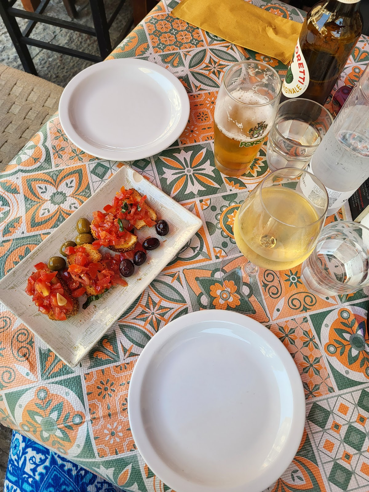
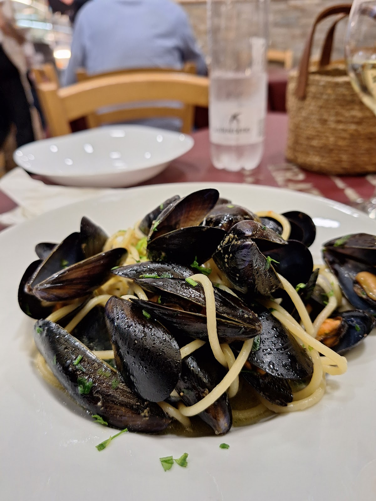
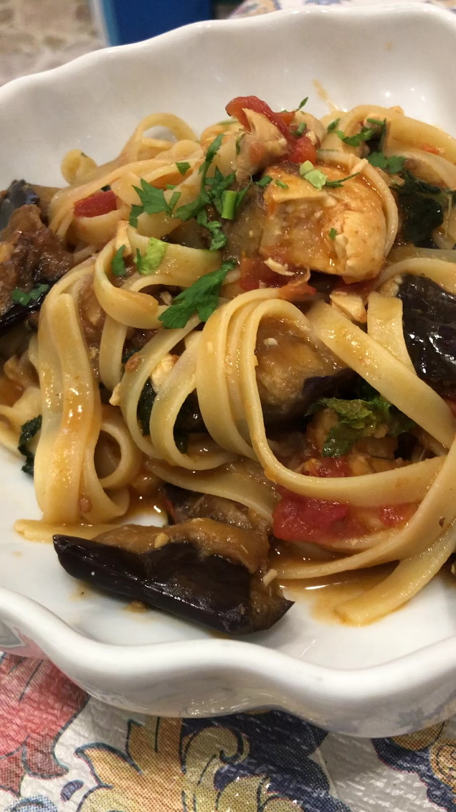
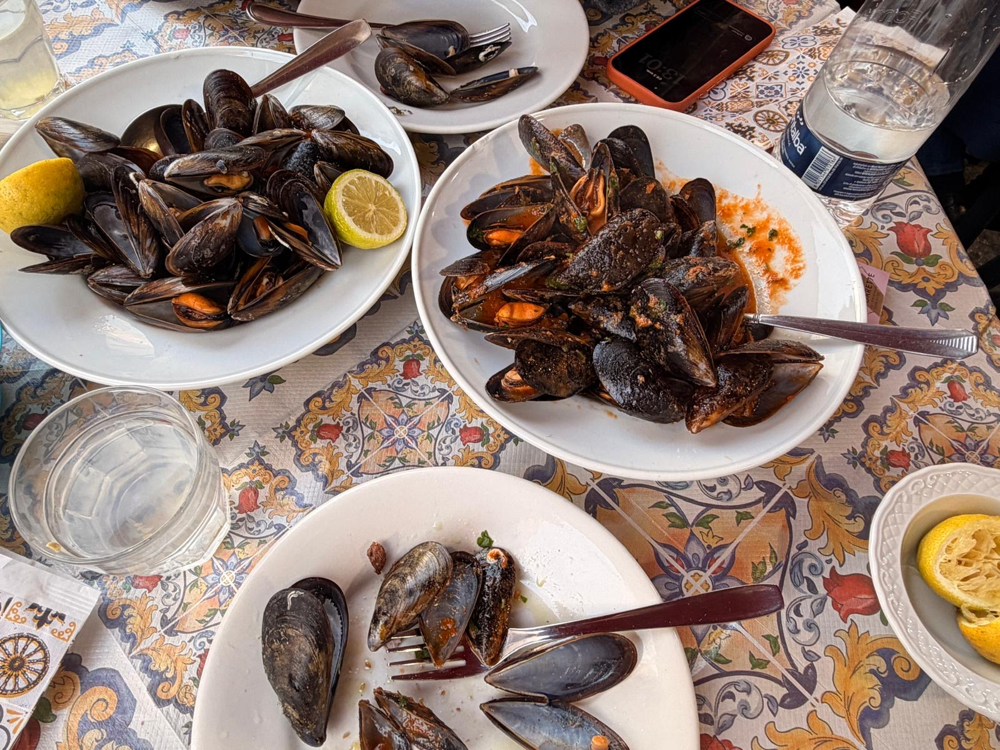
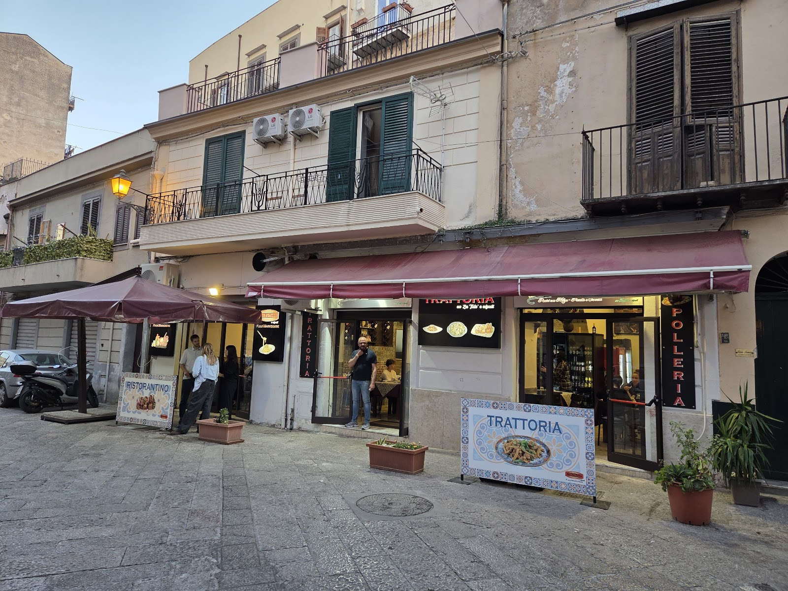
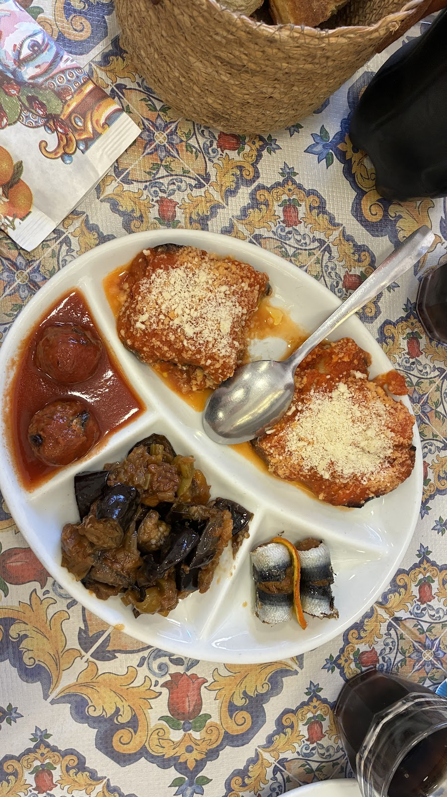
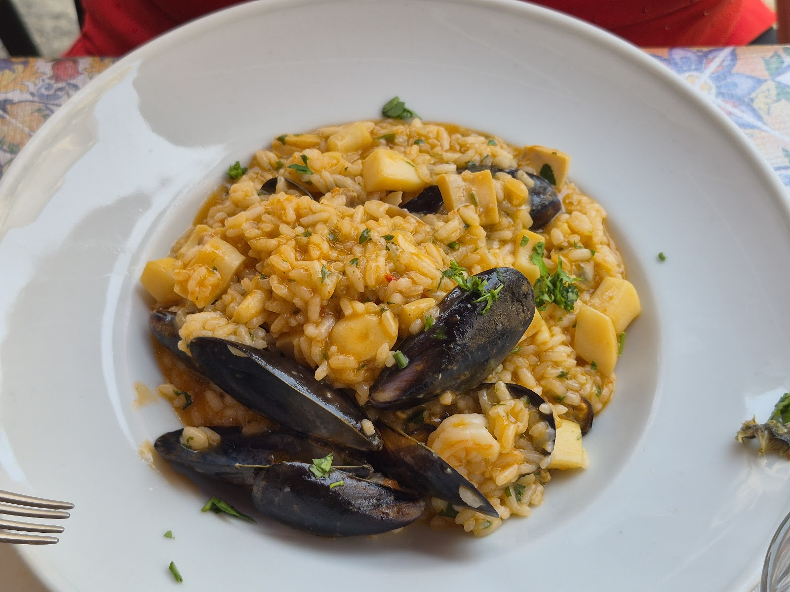
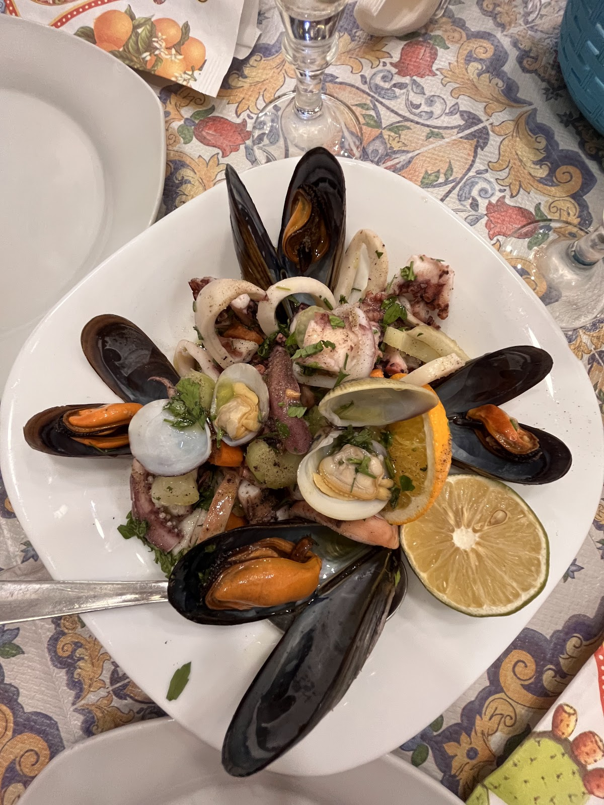
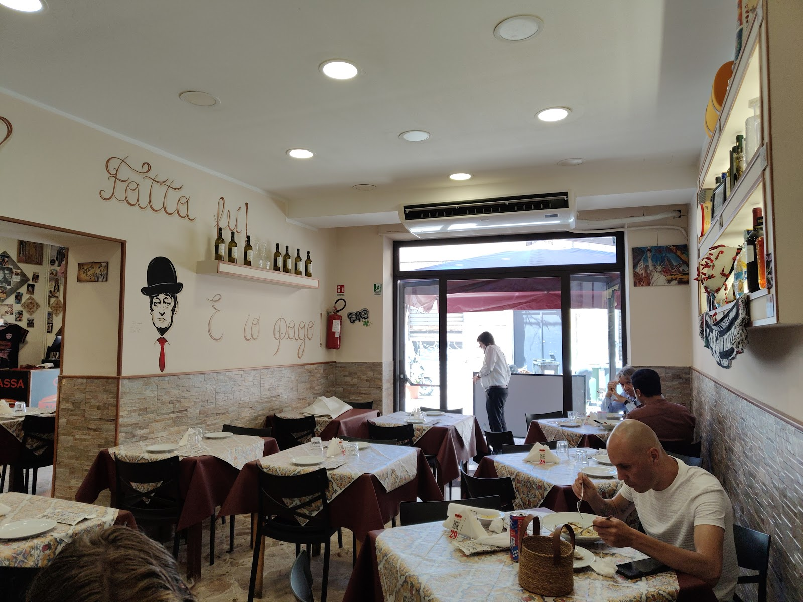
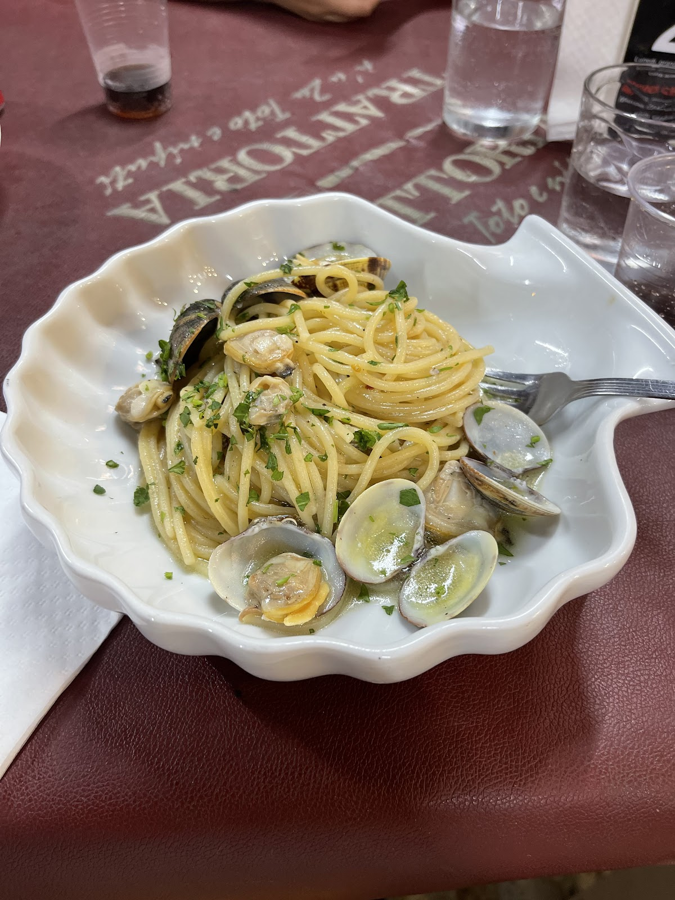

Da zio Totó e i nipoti: tavoli di maiolica, pesce del giorno e vino sfuso — nel vicolo dove Palermo fa sera. Uncle Totó & the grandkids: majolica tables, daily catch and house wine, on Palermo's liveliest old street.
Il nome è già tutta la storia: "no zu Totó" — da zio Totó — e i "niputi", i nipoti che oggi portano avanti la cucina. I tavoli piastrellati di maiolica siciliana, il pane e le olive che arrivano da soli, e il mare che cambia ogni giorno.
The name says it all: "at uncle Totó's", with the grandkids now running the kitchen. Sicilian-majolica tables, bread and olives that arrive on their own, and a catch that changes daily.
Su Google: "best meal in Palermo — and the cheapest". A noi basta così.


Il classico che apre la serata in Via dei Candelai.

Il primo più fotografato del tavolo di maiolica.

Croccante, di paranza, da dividere — o no.






"The food was excellent — very fresh, tasty, clearly high quality. Complimentary bread and olives made it feel even more welcoming."
"Such a lucky find! We had our best meal in Palermo here. And the cheapest."
"One of the best pastas we've eaten. Prices are great and the staff is very friendly."
★ 4,5 / 5 — 1.955 recensioni su Google
| Mer – Lun (pranzo)Wed – Mon (lunch) | 12:00 – 15:30 |
| Mer – Lun (cena)Wed – Mon (dinner) | 18:30 – 22:30 |
| MartedìTuesday | Chiuso · Closed |
Via dei Candelai 110, 90134 Palermo — centro storico
Un messaggio su WhatsApp e zio Totó vi tiene il tavolo di maiolica. One WhatsApp message and your majolica table is saved.
💬 WhatsApp 📞 320 236 1846 Apri in Maps